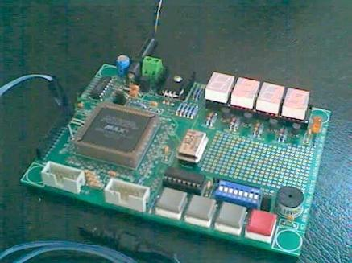
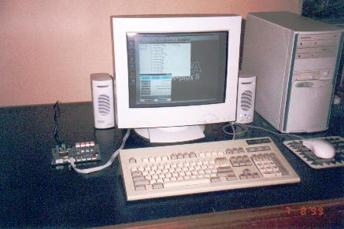

Unfortunately, due to depleted stock I can no longer sell these boards in small quantities. I call this the P7128SDB project board. The board contains a programmable logic device for developing digital projects, together with all required support circuitry. As you will see shortly it is entirely possible to program this board at home from your IBM compatible computer at a very modest cost. You can see the project board connected to my computer through a length of IDC cable in the second figure. A variety of projects can be designed for this PCB. One of these projects is described later and on a following page to help you get started. After mounting the components on the board no further soldering or wire links are needed to complete many of these projects. Full prototyping facilities are provided on board for more ambitious projects.
For purchasing information please follow this link: 
The project boards are designed for digital design students and engineers.
The project boards are specially designed for students who wish to learn about digital design techniques in a practical way. Practising digital design engineers will find the project board useful if they are familiarising themselves with Altera's MaxPlus II * system, or wish to get up to speed with this system.
The digital circuits can be designed on the computer screen and downloaded into the project board when ready. From pressing the program button in the software programmer in the software system (visible in the picture) the whole download process takes approximately five seconds. Consequently many design iterations can be downloaded and tested in quick succession to refine a design. You can also and should also use the simulator in the software to ensure that the circuit will perform its basic functions before the initial download into the PCB. The monitor in the picture shows the hierarchy window and the programmer window for the project I was doing at the time.
The software required to use the project board
Besides the project board you will need a copy of Altera's MaxPlus II * software. Altera provide an entry level version of this software on their web site. You can download this baseline system from Altera’s web site or you may be able to get a copy of one of the student versions of the MaxPlus II software. Many Universities and technical institutions will have a copy of one of the student versions, so if you are a digital design student you should have no problem getting a copy. Any of these software programs whilst described as entry level systems are actually very powerful development systems and completely adequate for learning to use the system and for programming the project board. Their only limitations are the range of Altera’s programmable logic devices that you can program with them plus some of the more advanced facilities are not available. There is both a baseline version and a student version that can do VHDL design entry.
These software systems each contain all the programming facilities including the simulator, timing analysers, editors, compiler and programmer needed to program the project board in an effective way. As an alternative to downloading the baseline system you can request a copy of Altera’s library CDROM which contains a copy of the baseline system as well as all of Altera’s data manuals, application notes and other documentation. To obtain a copy of the library CD you can place a request for a copy, to be delivered through the post, on Altera’s web site. If you have the full MaxPlus II system available at your place of work or study that will do fine.
You should be aware that the baseline system will take up close to 120 MB of hard disk space on your computer. The student versions take up much less space and contain all the facilities you need for working with the project board.
After installing the software on your PC you will need to obtain a license file. You will find full details of the requirements for using the software including the details for obtaining and creating a license file on Altera’s web site.
Links are listed at the end of this page.
The circuitry on the project board
An Altera In-System Programmable chip, the EPM7128SLC-84, occupies a prominent position on the board. After programming this chip, the program is retained in the device's memory after power is removed. So you can use your creation without having to reprogram it on power up. You can of course download a different circuit into the device whenever and as often as you like. This chip embodies 128 Macrocells (or logic elements, each consisting of an array of logic plus a flip flop). Consequently the resources available for your digital project are quite sufficient for a variety of practical and useful projects.
The circuitry on the project PCB includes a 4-digit 7-segment display, push buttons and DIP switches, a separate LED and a piezo buzzer, for user interaction. The 4-digit display is multiplexed to economise on resources. The display is bright and clear but the photographic process does not do it justice in the picture. An external plug pack at 7.5 to 12 volts DC at 200 mA is required to drive the on board regulated 5 volt supply. Two crystal controlled oscillator clock sources are provided, consisting of a low frequency 4060B crystal oscillator and divider driven by a 32.768 kHz watch crystal and an oscillator module for higher speed projects. The board will accept 8 pin or 14 pin form factor modules. Several jumpers are provided for quick selection of options.
All pins on the EPM7128SLC-84 device are brought out to pads for use in conjunction with the prototype area. A tri-state buffer chip is provided on board to interface the download cable with the printer port. A 10 pin IDC connector is provided for externally connecting a hexadecimal keypad. A second 10 pin IDC connector is provided for connection of the cable to the computer printer port. The project board is supported by rubber feet at the corners.
The low frequency oscillator is used for student projects such as an alarm clock and a hexadecimal calculator. The divider chain in the 4060B device can substantially save resources. The oscillator module is used for projects needing higher resolution such as a human response timing unit and a digital thermometer, which uses a DS1820 device. You can see the DS1820 device in the picture.
Try this project to get started
The full source code details of this project are available here to help you get started. The project is to create a countdown clock. This project is selected because it uses a keypad scanning arrangement and a multiplexed display driver circuit, plus a few other circuits that you might want to use in other projects. These circuits are created as sub-functions so that they can be tested with the simulator separately and are then available for use in other projects besides this one.
The countdown clock will display minutes and seconds. Pressing the digits 0 to 9 on the hex keypad will enter the digits into a shift register from the right (ie most significant digit first) and display them on the 4-digit 7-segment display. One of the push button keys on the project board will be used for loading and starting the count down. Another of the push button keys will toggling the count down between running and pausing. The separate LED will be lit when the countdown is on hold. After pressing the start key the countdown is loaded into a separate countdown register and the display will switch to display the countdown. A third push button key will toggle the display between displaying the keypad register and the countdown register whilst a countdown is in progress. A decimal point LED indicates which register is being displayed.
The multiplexed display driver will take care of displaying either the keypad shift register or the countdown register whichever is needed. This arrangement will allow a new countdown to be entered whilst the countdown is in progress. One of the DIP switches will control an option to either restart the countdown when zero is reached or allow the countdown display to continue the count upwards. If the countdown is to restart when zero is reached, a newly entered countdown if entered will be started or otherwise the old countdown will be started. A new countdown can also be started at any time by pressing the start key.
When the countdown reaches zero the buzzer will emit a pattern of beeps. If the countdown clock is allowed to count up when zero is reached it will not beep when the count register cycles through zero. The countdown clock can be operated as a count up clock by setting the initial count to zero. Another DIP switch will allow for disabling the buzzer if this is not wanted. I used the 1024 Hz output from the 4060B for this project.
Add a few refinements to the project, after all that is where the fun is doing these projects. See if you can make the pattern of beeps a bit more interesting when zero is reached. The pattern of beeps that I chose is of course the one I like. There are a number of unused keys on the hex keypad. We can assign uses to them as follows:
- "D" key = Switch to Countdown display
- "E" key = Backspace entered digits
- "F" key = Clear keypad display
- I use the * key for "F" and the # key for "E".
These keys operate whilst the countdown is in progress and the "E" and "F" keys and the decimal digit keys will switch the display to the input register.
When you are ready press one of the buttons below to see the source code in either AHDL or VHDL format.
Why is the source code in a Hardware Discription Language?
Many students and some practising engineers think of circuits when they design a digital circuit. I remember the old days when a digital designer had to use pencil and paper to design the circuits. Some circuits could be quite tedious to design in this way. However, logical design synthesis has progressed to the point where it is more convenient to think in terms of equations rather than circuits. With one of the Hardware Description Languages (HDL) available now, you only need to think in terms of functionality and equations for the description of the circuits. The compiler takes care of all the nitty gritty design details. The HDL is quicker and far more convenient for the description of the circuits than the old graphical circuits were. Today we want to design large and complex applications. The hardware resources to achieve these applications are now readily available. We need to take advantage of the quickest ways available to complete these projects in a timely way. You can see both AHDL and VHDL versions of the source code for this project on the following pages.
I still think you should study and understand the theory underlying digital design concepts and procedures when you design with programmable logic. This will give you confidence that the circuits are properly designed and will work without problems. Also you will know what is achievable and what isn't and why.
What are the main differences between AHDL and VHDL?
AHDL has been designed by the Altera Corporation specifically for use with their development software and programmable logic devices. VHDL has grown out of a need recognised by the United States Defence Forces to have a common language between system suppliers for describing complete systems primarily but not limited to digital systems. VHDL has become an industry standard used by programmable logic device manufacturers for the synthesis of the circuitry in their devices. In comparing the two languages for the purpose of synthesis there are a number of details that I can see that have a bearing on the effectiveness of these languages for the efficient design of digital circuits and systems using programmable logic devices. These comments are made with respect to the implementation of VHDL in the Altera software system. This is not an exhaustive analysis of this subject but represents my personal view of a few points that I have noted. My point of view is that I want to complete a digital design project with a high degree of functional detail as quickly and as effectively as possible. The shortest possible time to market is important if you are designing for a living.
Primitive availability. Probably the main difference between these hardware description languages is that VHDL has necessarily been written independently of the primitive components of a given manufacturer's devices. Different manufacturers have different names for flip flop types for example. Any significant project will require that you at least instantiate some of the specific components of the manufacturer's programmable device that you are using. This will require that you have some familiarity with the architecture of the manufacturer's device that you are using and with the available primitives for use in the device. In AHDL all required physical components such as flip flop types can be assigned directly through the VARIABLE section in the code which simplifies this process.
Variables have a different meaning in VHDL compared to their use in AHDL and are called signals in VHDL. In AHDL you of course still need to be familiar with the available primitives of the device that you plan to use. Instantiations of a manufacturer's components in VHDL can significantly increase the number of labels used in the code, which makes VHDL somewhat verbose. Many of the structures used in VHDL code are required to be given names. These names make no contribution to the functionality of the code and simply add to the number of names that appear in the code.
A consequence of the need for instantiating a manufacturer's component primitives has resulted in the way that VHDL synthesises memory. VHDL uses a process structure for synthesising memory. The process structure is also used with so called sequential statements in VHDL. On occasion some care is needed to avoid creating implied memory where a simple logic function is all that is needed. A small advantage for VHDL is that variable names have scope within the process structures. For example, this can be useful for index variable names when FOR GENERATE and similar statements are used. This can result in VHDL code being somewhat more complicated and prone to coding errors than AHDL code is. Another consequence is that VHDL has several styles that can be used for design purposes. The design procedure is simpler in VHDL if you make sure that you use the same style of coding throughout a project.
Multivalued logic. In VHDL logic signals have multiple values. In AHDL, which is provided specifically for the purpose of synthesis, this level of detail is not necessary and would simply confuse the issue. In VHDL care is needed to ensure that all signals have the same multiple values across subfunctions (known as components in VHDL). This effects the choice of libraries that you use for your project.
Multiplace generation of logic functions. In AHDL it is possible to define parts of the logic for a specific variable (signal in VHDL) in several places in the code and the AHDL compiler will logically OR each of these logic functions to give the complete function. This is a very convenient feature for use in state machine coding but is missing in VHDL where the function has to be defined separately.
Group notation. AHDL has a convenient method of dealing with group notation. Grouped signals are called vector signals in VHDL. In the code or architecture section AHDL grouped signals are readily distinguished from non-grouped signals by the pair of square brackets after the signal name. In VHDL there is no differentiation between grouped and non-grouped signals in the body of the code if the full range of the signals is called for, so care is needed in reading the code.
Embedded conditionals. VHDL apparently does not support complex embedded conditionals in some of its structures. These conditionals need to be assigned separate signal names and defined separately for use in these structures. Complex embedded conditionals in AHDL makes the resulting code more compact. This contributes to making VHDL somewhat more verbose than AHDL.
Table structure. The table structure in AHDL is a convenient way of defining multiple functions that all depend on the same set of input variables. The equivalent methods in VHDL do not appear to be quite so flexible.
Some of these differences can be seen if you compare the AHDL and VHDL source code for the countdown clock on the next two pages. There are numerous minor differences in the way that VHDL code is written compared with AHDL but I will omit a discussion of these.
Whilst I have mostly described disadvantages of VHDL compared with AHDL, the significant advantage of VHDL is that the code is to a large extent transportable to different manufacturers devices, with the proviso that you will probably need to instantiate some components that are specific to a given manufacturer if you are designing a real project for the market or custom use. This topic is elaborated somewhat in the VHDL source code page.
The relevant links are:
- Altera’s home page: http://www.altera.com/
- For downloading the baseline system: http://www.altera.com/html/tools/baseline.html
- For downloading "MAX+PLUS II Getting Started": http://www.altera.com/html/literature/lsoft.html
- To make the request for an Altera library CD: http://www.altera.com/html/literature/ldb99.html
- To make an application for the authorisation code: Look for the link on Altera's home page.
- Altronics' link is: http://www.altronics.com.au/
- Jaycar Electronics: http://www.jaycar.com.au/
- Dick Smith Electronics: http://www.dse.com.au/
- Reserve or order a Project PCB by e-mail: dwsmith@senet.com.au
Continue with AHDL Source code OR Navigation menu at the top of the page OR Continue with VHDL Source code:
* MaxPlus II is a registered trade name of Altera Corporation.
David N. Warren-Smith, CPEng
Last edited: 29 November, 2006